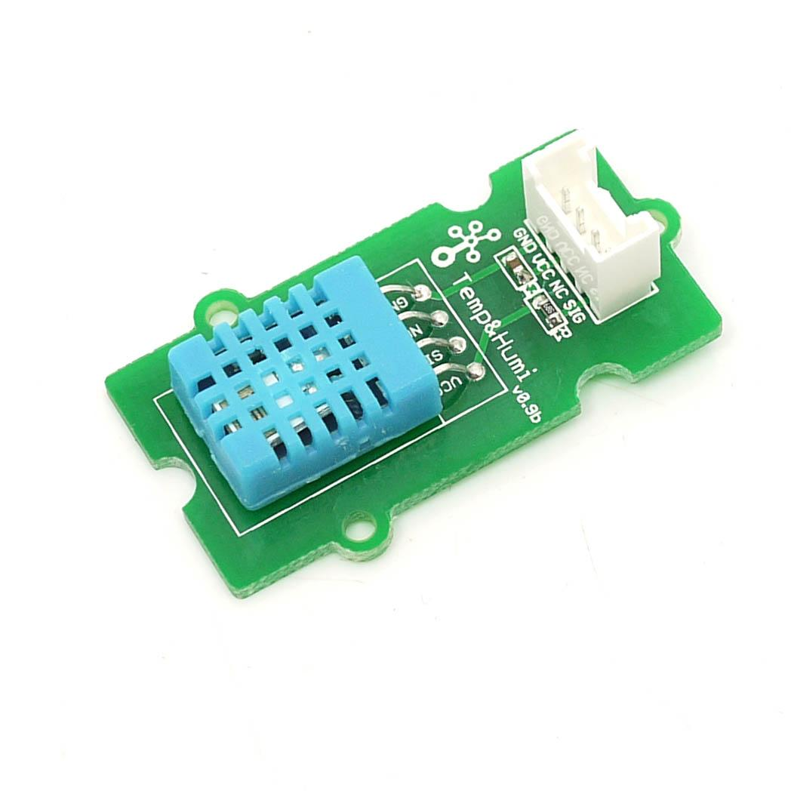
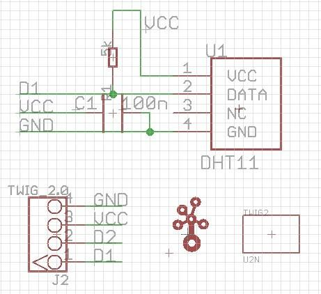
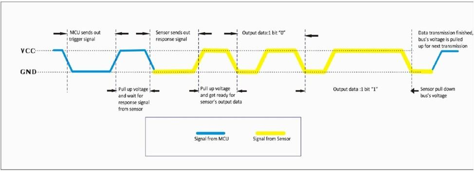
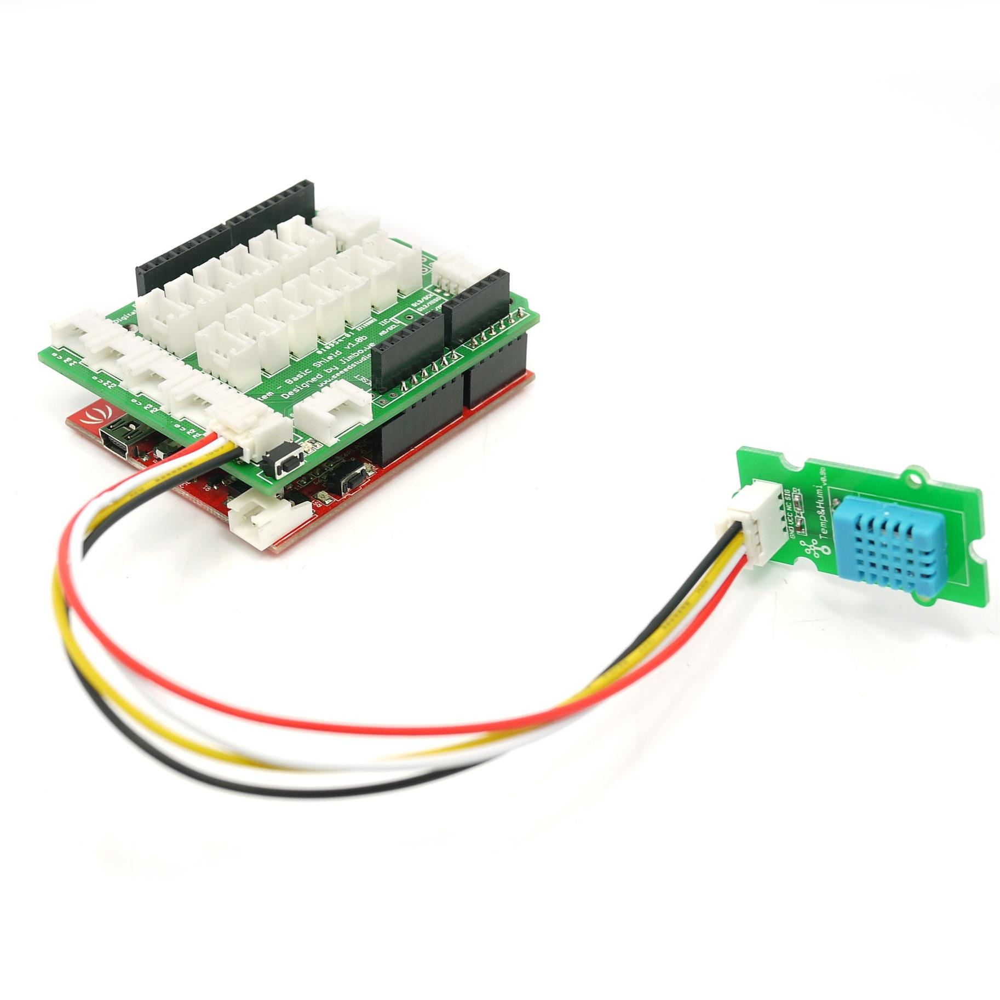

This temperature & humidity sensor provides a pre-calibrated digital output. A unique capacitive sensor element measures relative humidity and the temperature is measured by a negative temperature coefficient (NTC) thermistor. It has excellent reliability and long term stability. Please note that this sensor will not work for temperatures below 0 degree.
Model:SEN11301P


| Items | Min |
| PCB Size | 2.0cm*4.0cm |
| Interface | 2.0mm pitch pin header |
| IO Structure | SIG,VCC,GND,NC |
| ROHS | YES |
| Items | Conditions | Min | Norm | Max | Unit |
| VCC | - | 3.3 | - | 5 | Volts |
| Measuring Current Supply | - | 1.3 | - | 2.1 | mA |
| Average Current Supply | - | 0.5 | - | 1.1 | mA |
| Measuring Range |
Humidity | 20% | - | 90% | RH |
| Temperature | 0 | - | 50 | °C | |
| Accuracy | Humidity | - | - | ±5% | RH |
| Temperature | ±2 | °C | |||
| Sensitivity | Humidity | - | 1% | RH | |
| Temperature | 1 | °C | |||
| Repeatability | Humidity | ±1% | RH | ||
| Temperature | ±1 | °C | |||
| Long-term Stability | ±1% | RH/year | |||
| Signal Collecting Period | 2 | S |
When MCU sends a trigger signal, sensor will change from low power consumption mode to active mode. After the trigger signal sensor will send a response signal back to MCU, then 40 bit collected data is sent out and a new signal collecting is trigged.(Note that the 40 bit collected data which is sent from sensor to MCU is already collected before the trigger signal comes.) One trigger signal receives one time 40 bit response data from sensor. Single-bus data is used for communication between MCU and sensor.
The communication process is shown as below:

It costs 5mS for single time communication.The high-order bit of data sends out first. Signal Data is 40 bit, comprised of 16 bit humidity data, 16 bit temperature data and 8 bit checksum.The data format is:
8bits integer part of humidity+8bits decimal part of humidity +8bits integer part of temperature+8bits decimal part of temperature +8bits checksum.
Connect the Temperature and Humidity sensor to analog port A0.Then you can use the following programme to gain the temperature and humidity of the environment.(The code is for seeeduino only,if you use seeeduino mega you should change the code a little. See below, if you use seeeduino mega, you should change PINC to PINF, change DDRC to DDRF and change PORTC to PORTF)

#define DHT11_PIN 0 // ADC0 byte read_dht11_dat() { byte i = 0; byte result=0; for(i=0; i< 8; i++){ while(!(PINC & _BV(DHT11_PIN))); // wait for 50us delayMicroseconds(30); if(PINC & _BV(DHT11_PIN)) result |=(1<<(7-i)); while((PINC & _BV(DHT11_PIN))); // wait '1' finish } return result; } void setup() { DDRC |= _BV(DHT11_PIN); PORTC |= _BV(DHT11_PIN); Serial.begin(9600); Serial.println("Ready"); } void loop() { byte dht11_dat[5]; byte dht11_in; byte i; // start condition // 1. pull-down i/o pin from 18ms PORTC &= ~_BV(DHT11_PIN); delay(18); PORTC |= _BV(DHT11_PIN); delayMicroseconds(40); DDRC &= ~_BV(DHT11_PIN); delayMicroseconds(40); dht11_in = PINC & _BV(DHT11_PIN); if(dht11_in){ Serial.println("dht11 start condition 1 not met"); return; } delayMicroseconds(80); dht11_in = PINC & _BV(DHT11_PIN); if(!dht11_in){ Serial.println("dht11 start condition 2 not met"); return; } delayMicroseconds(80); // now ready for data reception for (i=0; i<5; i++) dht11_dat[i] = read_dht11_dat(); DDRC |= _BV(DHT11_PIN); PORTC |= _BV(DHT11_PIN); byte dht11_check_sum = dht11_dat[0]+dht11_dat[1]+dht11_dat[2]+dht11_dat[3]; // check check_sum if(dht11_dat[4]!= dht11_check_sum) { Serial.println("DHT11 checksum error"); } Serial.print("Current humdity = "); Serial.print(dht11_dat[0], DEC); Serial.print("."); Serial.print(dht11_dat[1], DEC); Serial.print("% "); Serial.print("temperature = "); Serial.print(dht11_dat[2], DEC); Serial.print("."); Serial.print(dht11_dat[3], DEC); Serial.println("C "); delay(2000); }
| Revision | Descriptions | Release |
|---|---|---|
| Grove - Temp&Humi Sensor v1.0 | Initial public release for Grove module | Jan 14, 2011 |
Click here to buy: http://www.seeedstudio.com/depot/grove-temphumi-sensor-p-745.html?cPath=144_147.
This documentation is licensed under the Creative Commons Attribution-ShareAlike License 3.0 Source code and libraries are licensed under GPL/LGPL, see source code files for details.
Links to external webpages which provide more application ideas, documents/datasheet or software libraries
Copyright (c) 2008-2016 Seeed Development Limited (www.seeedstudio.com / www.seeed.cc)